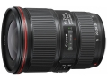
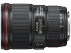
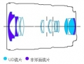
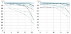

器材库 > 35mm画幅AF变焦镜头 > EF 16-35/4L IS USM

详细规格
镜头类型
广角变焦镜头
发布日期
2014-05-13
焦距
16mm-35mm
最大光圈
f/4
最小光圈
f/22
视角（对角）
108°10‘ - 63°
视角（水平）
98° - 54°
视角（垂直）
74°10’ -38°
镜头结构
16片/12组
非球面镜片
3片
低/超低色散镜片
2片
光圈叶片
9片
最近对焦距离
28cm
最大放大倍率
0.23
驱动马达
USM（超声波马达）
滤镜口径
77mm
镜头卡口
Canon EF
防抖
是
颜色
黑色
尺寸
82.6×112.8mm
重量
615g
备注
内对焦；全时手动对焦；防水滴防尘；防污氟镀膜。
影相行2015-09-21 12:104.92 分
操作性 5.00耐用性 4.50性价比 5.00解像力 5.00色彩还原 5.00机械结构 5.00
biyeguhong2015-09-15 14:444.58 分
操作性 4.50耐用性 5.00性价比 4.50解像力 4.50色彩还原 4.50机械结构 4.50
eos_yu2015-08-13 13:044.92 分
操作性 5.00耐用性 4.50性价比 5.00解像力 5.00色彩还原 5.00机械结构 5.00
秦始蝗2015-07-23 09:584.58 分
操作性 5.00耐用性 5.00性价比 4.50解像力 4.00色彩还原 4.50机械结构 4.50
ufowjt2015-07-21 11:464.75 分
操作性 4.50耐用性 5.00性价比 4.50解像力 5.00色彩还原 4.50机械结构 5.00
ayalxd2015-05-18 17:125 分
操作性 5.00耐用性 5.00性价比 5.00解像力 5.00色彩还原 5.00机械结构 5.00
昊子蕾子2015-02-04 15:354.75 分
操作性 4.50耐用性 5.00性价比 5.00解像力 4.00色彩还原 5.00机械结构 5.00
HQQ702014-10-28 15:544.42 分
操作性 5.00耐用性 4.50性价比 4.50解像力 4.00色彩还原 4.00机械结构 4.50
elliotliu2014-08-21 00:165 分
操作性 5.00耐用性 5.00性价比 5.00解像力 5.00色彩还原 5.00机械结构 5.00
jeshe2014-08-14 16:224.58 分
操作性 5.00耐用性 4.00性价比 4.50解像力 4.50色彩还原 5.00机械结构 4.50
wingszero2014-08-14 02:51
Sray2014-07-03 22:034.58 分
操作性 4.50耐用性 5.00性价比 4.50解像力 4.50色彩还原 4.50机械结构 4.50
产品图 / 样片
EF 16-35/4L IS USM产品图

EF 16-35/4L IS USM产品图

EF 16-35/4L IS USM产品图

EF 16-35/4L IS USM产品图
评测 / 相关文章
- 详细内容 （存档）
- 完美接班人 佳能16-35/4 IS评测 （存档）
- ［试用］新锐超广角 试玩佳能EF16-35/4L IS （存档）
- ［试用］红圈们的人像故事 （存档）
- ［试用］佳能 EF 16-35/4L IS USM样片 （存档）
- ［试用］佳能EF 16-35mm F4L IS USM海外评测 （存档）
- ［试用］佳能EF 16-35mm f4 L IS USM到手开箱 （存档）
- ［试用］佳能EF 16-35/4L IS USM入手试镜 （存档）
- ［资讯］佳能EF 16-35/4L IS USM官方样张欣赏 （存档）
相关文章
- ［资讯］EOS大家谈：站在云端看家园 （存档）
- ［试用］新锐超广角 试玩佳能EF16-35/4L IS （存档）
- ［试用］红圈们的人像故事 （存档）
- ［试用］佳能 EF 16-35/4L IS USM样片 （存档）
- ［试用］完美接班人 佳能16-35/4 IS评测 （存档）
- ［试用］佳能EF 16-35mm F4L IS USM海外评测 （存档）
- ［试用］佳能EF 16-35mm f4 L IS USM到手开箱 （存档）
- ［试用］佳能EF 16-35/4L IS USM入手试镜 （存档）
- ［资讯］佳能EF 16-35/4L IS USM官方样张欣赏 （存档）
- ［资讯］首次加入IS 佳能发布EF 16-35/4L IS USM （存档）